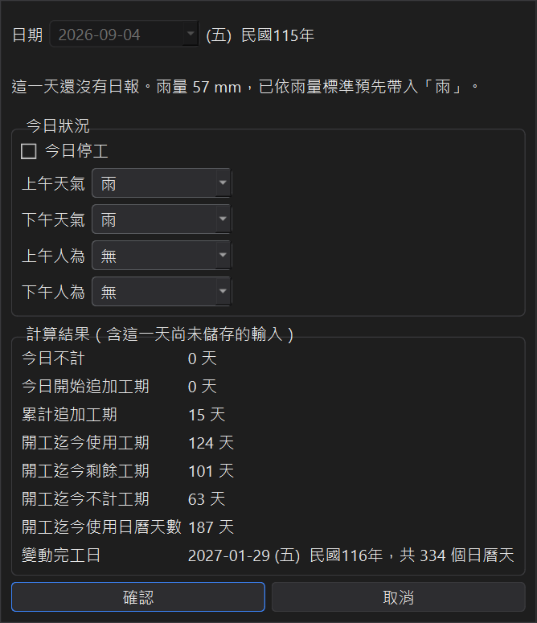
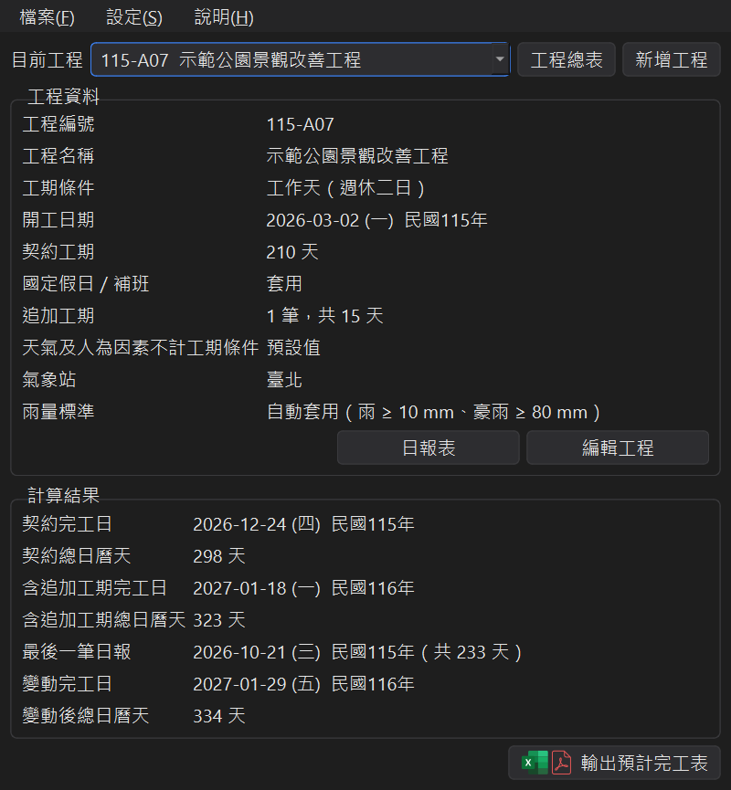

日報表與變動完工日
日報表只需要填工期相關的五個欄位：停工、上午天氣、下午天氣、上午人為、下午人為。 填完立即依不計工期條件重新計算變動完工日。
1、日報表列表
在主視窗按日報表，列出開工日到今天的每一天（日報已經填到更後面時，就列到最後一筆）。

● 灰底「無資料」的是還沒填的日子，一眼就知道漏了哪幾天。
● 按該列的 + 或雙擊一列就能填寫；已填的日子按編輯修改，或按刪除。
● 新增其他日期的日報：自己選日期填寫，預設是最後一筆日報的隔天。
● 顯示順序可以選由新到舊或由舊到新。
每一列右邊是當天的計算結果：今日不計、今日開始追加工期、累計追加工期、開工迄今使用工期、 開工迄今剩餘工期、開工迄今不計工期、開工迄今使用日曆天數。天氣與人為因素的底色可以在 設定 → 晴雨表顏色調整。
2、填寫一天的日報

勾選今日停工，或選擇上下午的天氣（晴、雨、豪雨、颱風、酷熱、泥濘、其他）與人為因素（無、停電、其他）。 下方的計算結果會即時顯示這一天輸入之後的累計工期與變動完工日，確認無誤再按確認。
按確認只會存這一天的日報；取消則這一天維持原樣。
3、氣象站雨量自動帶入
在編輯工程的雨量區塊選擇工地附近的氣象站（按氣象站資料可查看各站的縣市、地址與海拔，雙擊即可選用）。 之後打開日報表時，會自動下載這個氣象站每天的雨量，顯示在雨量 (mm)欄。
再勾選自動套用雨量標準並設定門檻（預設雨 ≥ 10 mm、豪雨 ≥ 80 mm）：
● 列表的自動套用雨量標準欄會顯示依雨量判斷的天氣。
● 填寫還沒有日報的日子時，上下午天氣會依雨量預先帶入「雨」或「豪雨」，並提示當天雨量；你仍可以自己修改。
已經填過的日報不會被雨量改掉。
4、變動完工日
回到主視窗，計算結果會顯示最後一筆日報的日期與天數，以及依日報表算出的變動完工日與變動後總日曆天。

變動完工日算到最後一筆日報為止；之後還沒發生的日子，都當作照計工期。
5、從日報表輸出
日報表下方可以輸出晴雨表（含工期計算表）與日報總表（Excel，欄位與列表相同）， 請見輸出預計完工表與晴雨表。